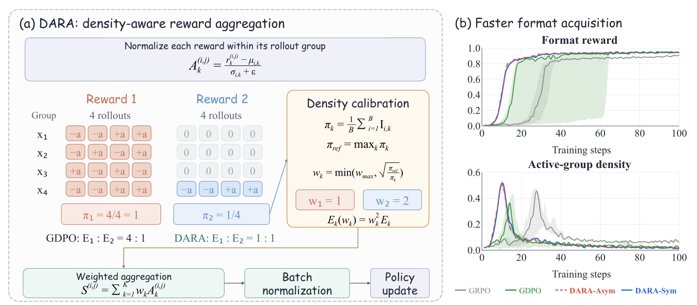
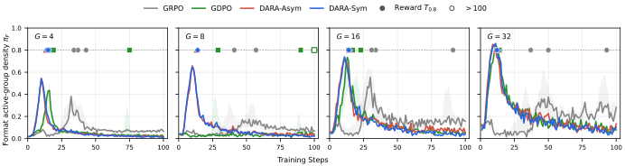
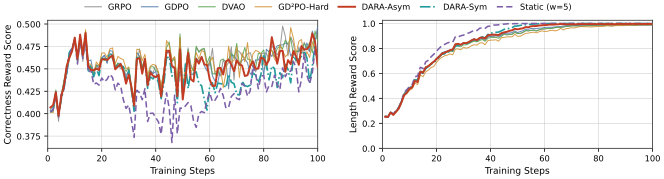
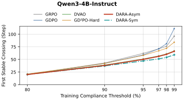
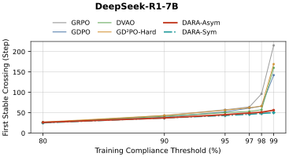
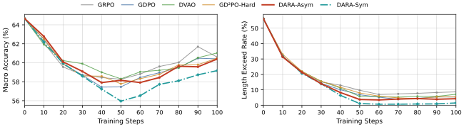

Density-Aware Reward Aggregation for Multi-Reward RL

Multi-reward reinforcement learning trains large language models to satisfy multiple behavioral objectives simultaneously. Reward-wise normalization, as used in GDPO, preserves reward-specific relative information within rollout groups, but different objectives can still exhibit uneven learning progress. We study this behavior through advantage energy, the sum of a reward's squared advantages over a batch. Under idealized GDPO normalization, we show that this energy is proportional to active-group density: the fraction of rollout groups in which the reward provides nonzero relative advantages. This reveals a residual batch-level signal imbalance and provides a basis for calibrating reward contributions. Based on this relation, we propose Density-Aware Reward Aggregation (DARA). We derive an inverse-square-root density correction that gives greater weight to signals from less frequently active rewards. DARA computes its weights from each rollout batch, adapting to changes in reward activity throughout training without modifying the underlying policy optimization objective. Experiments on tool calling and mathematical reasoning show that DARA learns the targeted behaviors faster than GDPO, reaching high format compliance in up to 26% fewer training steps on tool calling and near-saturated length compliance in up to 65% fewer steps on mathematical reasoning, while remaining competitive in final performance.
GRPO sums rewards before normalizing, which can make different reward combinations indistinguishable. GDPO fixes this by normalizing each reward within its group first. But the GDPO paper itself reports that learning stays uneven:
With equal reward weights, the model often maximizes the easier objective at the expense of the harder one.
On DeepSeek-R1-7B, GDPO sweeps the length-reward weight over {1.0, 0.75, 0.5, 0.25}. Weights of 0.75 and 0.5 barely change the length behavior; only 0.25 produces a clear shift. The right weight has to be found by repeated training runs.
GDPO describes this preference for the easier reward as a form of reward hacking, and works around it by conditioning the easy reward on the hard one.
Summarized from Section 3 and Section 4.2.1 of GDPO: Group reward-Decoupled Normalization Policy Optimization for Multi-reward RL Optimization.
A batch has \(B\) prompts. For each prompt \(x_i\), the policy samples a group of \(G\) responses, and each response \(y^{(i,j)}\) receives \(K\) rewards \(r_k^{(i,j)}\), one per reward channel \(k=1,\dots,K\) (e.g. correctness and format). GDPO normalizes each reward channel within its group: \(A_k^{(i,j)}=\bigl(r_k^{(i,j)}-\mu_{i,k}\bigr)/\bigl(\sigma_{i,k}+\epsilon\bigr)\).
If all \(G\) responses in group \(i\) get the same value of reward \(k\), then \(A_k^{(i,j)}=0\) for the whole group and reward \(k\) gives no learning signal there. Reward \(k\) is active in group \(i\) when its values differ within the group, and its active-group density \(\pi_k\) is the fraction of the \(B\) groups in which it is active.
GDPO equalizes the scale inside each active group, but the batch total still scales linearly with how often the reward is active. That is the leftover imbalance. For a binary reward with success rate \(p\), a group of size \(G\) is active with probability \(1-p^G-(1-p)^G\). A reward that is almost never solved and a reward that is almost always satisfied are both rarely active, so both get very little energy. In the appendix we further show that, under a stated covariance condition, this energy also governs the fluctuation of each reward's policy-gradient contribution.
Expected density for binary rewards when every prompt has the same success rate. With prompts of different difficulty, density is lower than this (Jensen's inequality, see the appendix).
Scaling reward \(k\) by \(\alpha_k\) scales its energy by \(\alpha_k^2\). To match the reward with the highest density \(\pi_{\mathrm{ref}}=\max_k \pi_k\), we need \(\alpha_k^2\pi_k=\pi_{\mathrm{ref}}\). This gives the inverse-square-root rule:
The weights are recomputed from every rollout batch, so they follow each reward as it becomes active, saturates, or fades. Rewards that are rarely active get a larger weight exactly when they do provide a comparison. The cap \(w_{\max}\) limits amplification when a reward is active in very few groups.
Multiply both positive and negative advantages by \(w_k\). This is the exact energy calibration above.
Only positive advantages get the extra weight: \(A_k + (w_k-1)[A_k]_+\). When rewards conflict (e.g. a correct but over-long answer), this avoids also amplifying the negative push. Its energy lies between GDPO's and DARA-Sym's.
# rewards: [B, G, K] = prompts x rollouts x reward channels A = (rewards - rewards.mean(1, keepdim=True)) / (rewards.std(1, keepdim=True) + eps) pi = (A.abs().sum(1) > tau).float().mean(0) # active-group density w = torch.where(pi > 0, (pi.max() / pi).sqrt().clamp(max=w_max), 1.0) A = w * A if sym else A + (w - 1) * A.clamp(min=0) # DARA-Sym / DARA-Asym S = A.sum(-1) adv = (S - S.mean()) / (S.std() + eps) # then the usual policy loss
Sketch of the advantage computation (Algorithm 1 in the paper). The highlighted lines are what DARA adds to GDPO.
Following ToolRL and GDPO, Qwen2.5-1.5B/3B-Instruct learn to call tools, with a binary format reward and a correctness reward in [−3, 3]. We compare with GRPO, GDPO and two concurrent methods, DVAO and GD²PO-Hard, and evaluate on BFCL-v4.
The format reward rises fastest exactly when its active-group density peaks. DARA moves both the density peak and the rapid-learning phase earlier: the median format reward reaches 0.8 at step 14–15, versus 19 for GDPO and 34 for GRPO.
For the baselines, accuracy is mostly in place by step 20, while format compliance lags until step 30–40. This is the uneven learning the theory describes; DARA learns both early. At step 60, DARA-Sym and DARA-Asym have the highest Average Accuracy (50.94% and 50.69%) and Average Format (96.06% and 96.02%); the best baseline reaches 50.50% and 90.11%. At step 100, when most methods have converged, DARA stays competitive:
| Method | Qwen2.5-1.5B-Instruct | Qwen2.5-3B-Instruct | ||
|---|---|---|---|---|
| Avg. Acc. | Avg. Format | Avg. Acc. | Avg. Format | |
| Base | 7.25 | 0.23 | 28.55 | 32.77 |
| GRPO | 48.46 | 81.01 | 52.57 | 88.76 |
| GDPO | 50.37 | 97.11 | 53.66 | 96.57 |
| DVAO | 48.64 | 93.52 | 54.22 | 97.04 |
| GD²PO-Hard | 50.13 | 95.52 | 53.90 | 97.00 |
| DARA-Asym | 50.59 | 97.90 | 53.63 | 96.50 |
| DARA-Sym | 51.17 | 97.55 | 54.15 | 97.22 |
BFCL-v4 at step 100, mean over 5 training seeds. Per-subset results (Live / Non-Live / Multi-Turn) are in Table 1 of the paper.
The theory makes a testable prediction. A group is active when it contains both a success and a failure, which happens with probability \(1-p^G-(1-p)^G\) and grows with group size \(G\). So even with the same number of responses per step (2,048), splitting them into larger groups makes more groups produce a gradient for the format reward, and the format reward should be learned faster. We vary \(G\in\{4,8,16,32\}\):

Exactly as predicted: larger \(G\) raises the format density for every method, and the 0.8 crossing comes earlier. GDPO learns format slowly and inconsistently at small \(G\) and only reliably at \(G=16\) and \(32\). DARA also benefits from larger groups, and reaches 0.8 earlier than GRPO and GDPO at every group size, because its calibration compensates for sparse activity.
We add a length reward that requires the <think> block to have at most 16 words. A new objective competes for
learning signal. Under GDPO, it pulls format compliance down; DARA calibrates each reward by its own density and keeps format nearly intact:
| Method | Average Format | Multi-Turn Format | Avg. Len. (3 rewards) | ||
|---|---|---|---|---|---|
| 2 rewards | 3 rewards | 2 rewards | 3 rewards | ||
| GDPO | 97.11 | 94.39 (−2.72) | 91.40 | 83.17 (−8.23) | 97.96 |
| DARA-Asym | 97.90 | 96.93 (−0.97) | 94.17 | 90.80 (−3.37) | 98.05 |
| DARA-Sym | 97.55 | 97.43 (−0.12) | 92.77 | 92.30 (−0.47) | 98.72 |
BFCL-v4 at step 100, Qwen2.5-1.5B-Instruct. Average Accuracy is comparable across methods (50.46–50.63). Full results: Tables 1 and 2 of the paper.
Two competing binary rewards: a correct final answer, and a response of at most 4,000 tokens. We train on DeepScaleR-Preview with DeepSeek-R1-1.5B, Qwen3-4B-Instruct and DeepSeek-R1-7B (plus Qwen3-4B-Thinking), and evaluate on MATH-500, AIME 2024, AMC 2022/23, Minerva and OlympiadBench.

Early on, many groups contain both short and over-long answers, so the length reward is dense and all methods look alike. As compliance approaches 100%, mixed groups become rare: the length reward turns sparse right where the last bit of improvement is hardest. This is the regime DARA targets.


At 80% compliance, DARA and GDPO are tied (step 20 on Qwen3-4B-Instruct). At 99%, DARA-Asym / DARA-Sym / GDPO need steps 66 / 59 / 111 on Qwen3-4B-Instruct and 56 / 50 / 142 on DeepSeek-R1-7B: 41–65% fewer steps than GDPO.

| Method | DeepSeek-R1-1.5B | Qwen3-4B-Instruct | DeepSeek-R1-7B | ||||||
|---|---|---|---|---|---|---|---|---|---|
| Acc ↑ | Exceed ↓ | Joint ↑ | Acc ↑ | Exceed ↓ | Joint ↑ | Acc ↑ | Exceed ↓ | Joint ↑ | |
| Base | 48.93 | 65.23 | 27.75 | 68.15 | 33.60 | 51.69 | 64.66 | 56.16 | 36.32 |
| GRPO | 45.52 | 11.03 | 44.69 | 62.14 | 8.07 | 60.48 | 58.26 | 9.73 | 56.74 |
| GDPO | 44.12 | 8.66 | 43.47 | 60.82 | 7.64 | 59.19 | 57.45 | 6.82 | 56.48 |
| DVAO | 45.58 | 11.35 | 44.57 | 61.37 | 4.77 | 60.34 | 58.15 | 5.75 | 57.53 |
| GD²PO-Hard | 44.24 | 11.41 | 43.45 | 60.58 | 7.28 | 59.16 | 57.78 | 7.96 | 56.35 |
| DARA-Asym | 45.83 | 8.16 | 45.14 | 60.30 | 4.38 | 59.68 | 58.31 | 3.73 | 57.83 |
| DARA-Sym | 44.43 | 5.18 | 44.12 | 58.76 | 1.69 | 58.52 | 55.96 | 1.09 | 55.79 |
Macro averages over five benchmarks (%). Exceed: responses longer than 4,000 tokens. Joint: correct and within the length limit.
DARA-Sym has the lowest Exceed on all three models. DARA-Asym keeps more accuracy and achieves the best Joint score and accuracy on both DeepSeek-R1 models. On Qwen3-4B, GRPO leads at step 50; after training to step 100, the gap nearly closes: DARA-Asym reaches 62.17% vs. 62.99% accuracy on Qwen3-4B-Instruct and 64.23% vs. 64.82% on Qwen3-4B-Thinking, while cutting Exceed from 0.70% to 0.25% and from 1.86% to 0.94%.
We replace DARA's per-batch weights with a fixed, large weight on the length reward (correctness 1, length 5), keeping everything else identical. A fixed weight does speed up length optimization, as GDPO also found, but it pays for it in accuracy.
| DeepSeek-R1-1.5B | Acc ↑ | Exceed ↓ | Joint ↑ |
|---|---|---|---|
| DARA-Asym | 48.03 | 4.21 | 47.76 |
| Static-Asym (w = 5) | 46.84 | 3.14 | 46.72 |
| DARA-Sym | 46.71 | 0.89 | 46.67 |
| Static-Sym (w = 5) | 45.97 | 0.87 | 45.96 |
A static weight amplifies the length reward from the first step, even while it is still dense. DARA's length weight starts near 1 (about 1.03 at step 1 on DeepSeek-R1-1.5B) and grows only as the reward turns sparse, so extra signal goes where it is missing. In the training curves above, the static control has the lowest correctness reward.
It also removes the manual tuning that GDPO needed (see The problem): instead of sweeping a fixed weight over repeated runs, DARA computes the weights from active-group density in every batch.
@article{zheng2026dara,
title = {Make Sparse Rewards Count: Density-Aware Reward Aggregation for Multi-Reward {RL}},
author = {Zheng, Tong and Zhai, Skylar and Cheng, Zhan and Sha, TianMing and Huang, Youling and
Zhou, Shuo and Qi, Shaotong and Liang, Jingcheng and Ding, Xuwei and Xu, Pengcheng},
journal = {arXiv preprint arXiv:2610.00574},
year = {2026}
}